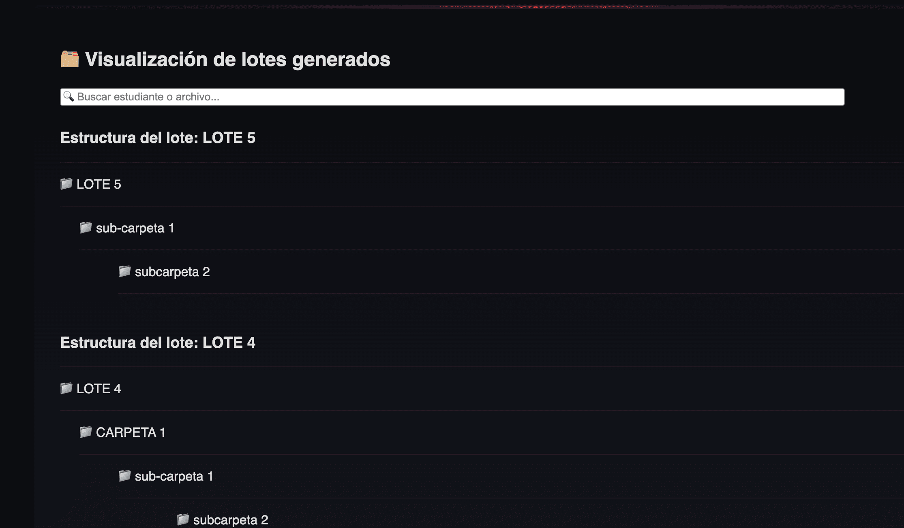
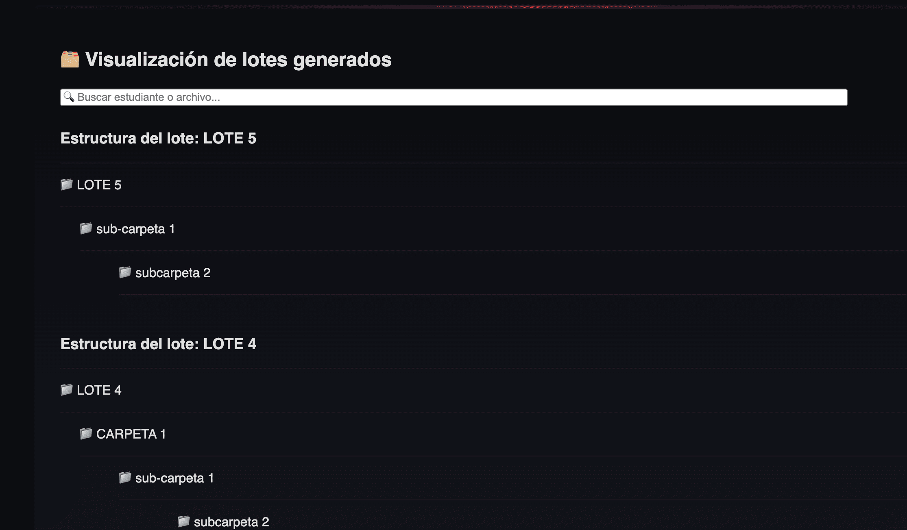

Proyectos Destacados
leadsHunter Ver repositorio
Aplicación Django que automatiza la búsqueda de potenciales clientes con la API de Google Places. Permite generar informes personalizados para equipos de ventas, incluyendo exportación a PDF.


Mentor.IA
Plataforma experimental que genera cursos y objetivos personalizados mediante integración de modelos LLM, RAG, bitácora de avances y generación progresiva de teoría. Pensada para formación autónoma, planificación de hábitos y workflows educativos flexibles.
Asistente para Google Drive Ver repositorio
Aplicación Flask diseñada para facilitar la gestión de materiales educativos en Google Drive, ideal para docentes con grupos numerosos. A partir de un listado en Google Sheets, el sistema genera automáticamente carpetas privadas para cada estudiante, gestiona permisos de acceso y permite distribuir archivos o carpetas individuales o masivos. El asistente permite también eliminar o modificar elementos por lote o de forma selectiva, optimizando significativamente el flujo de trabajo docente.
 

 6.41.54 p. m..png)